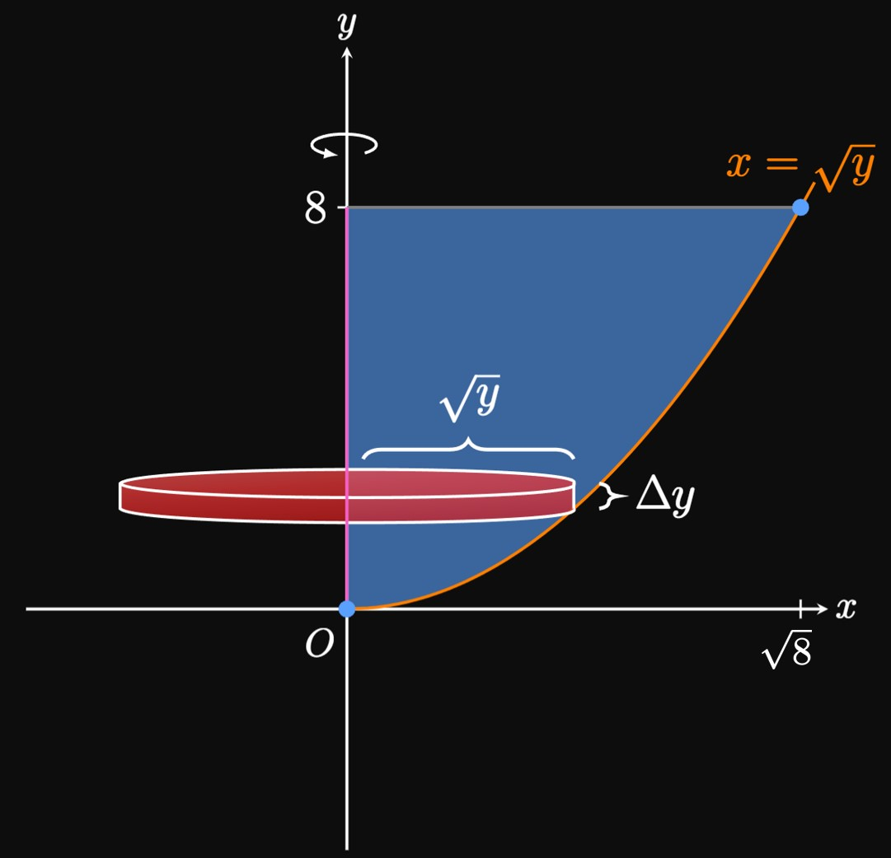
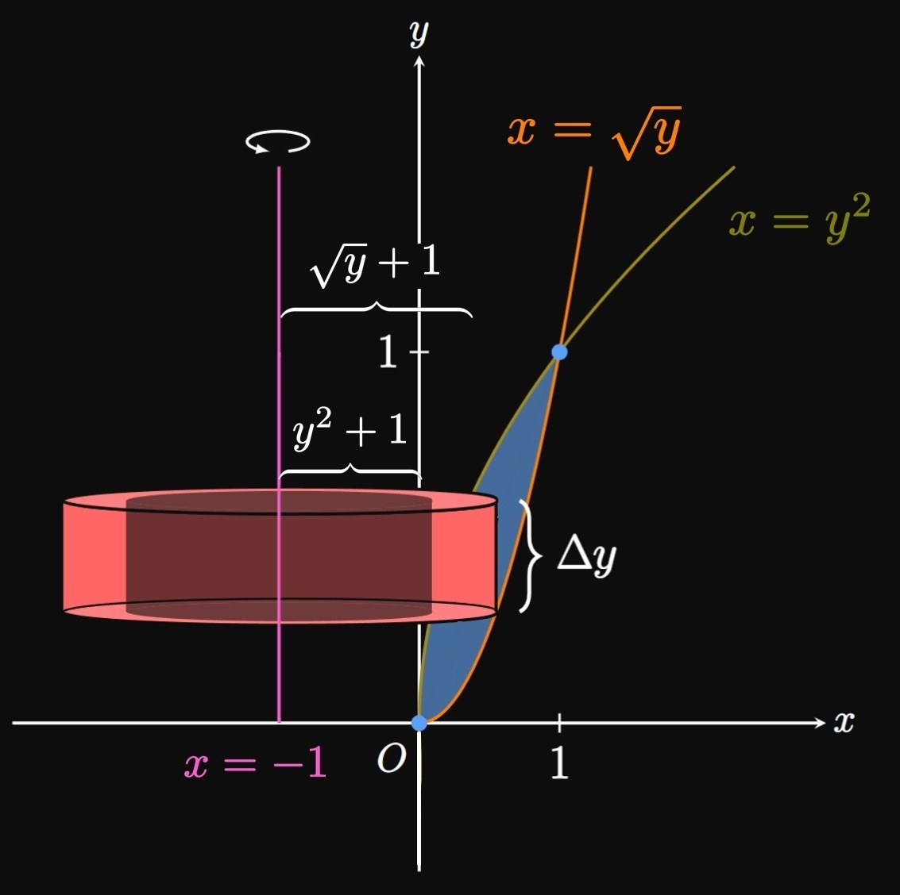
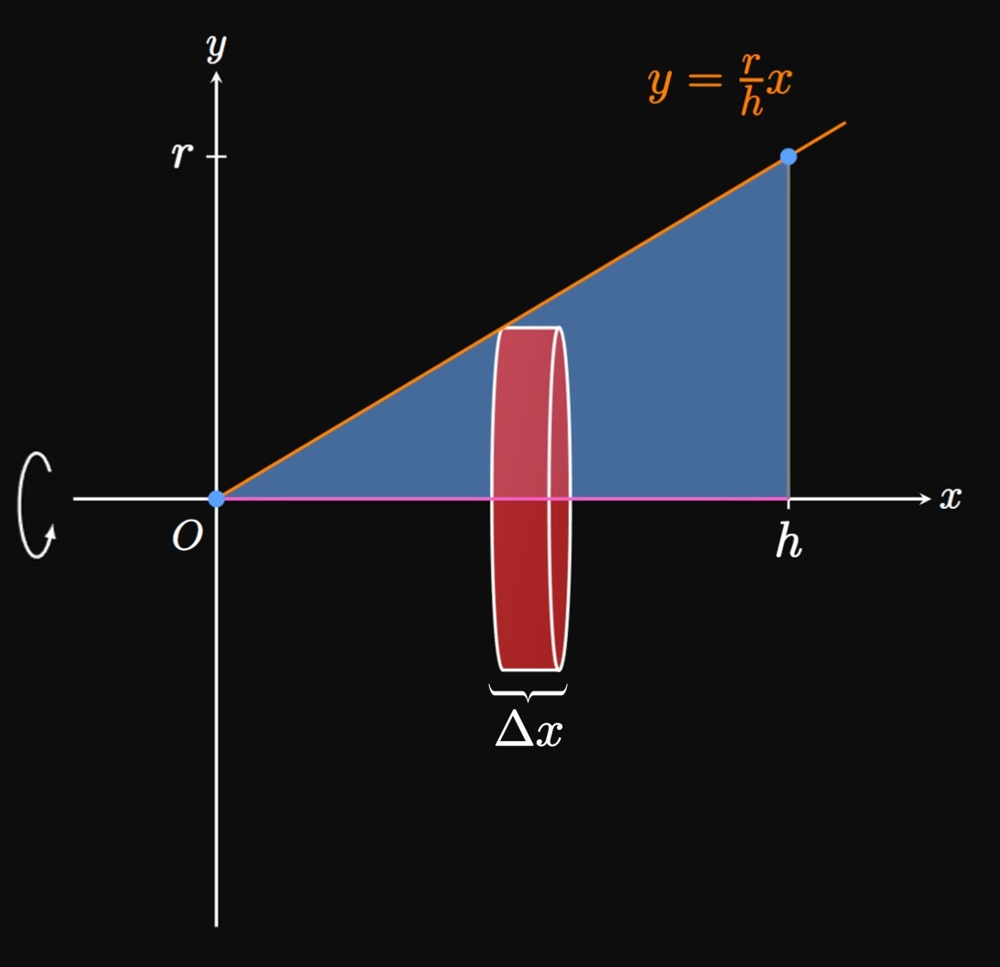

When do we use the Disk Method,
and when do we use the Washer Method?
SOLUTION
Both methods enable us to calculate volumes of solids of revolution.
We use the Disk Method
when there is no gap between a bounded region and the axis of rotation.
But we use the Washer Method when there is a gap between the bounded region and the axis of rotation.
EXERCISE 2
For
\(\ds y = \sqrt x \cmaa y = 0 \cmaa x = 16 \scoll \abtAxis{x}\)
calculate the volume of the solid generated
by revolving the bounded region around the specified axis.
SOLUTION
The enclosed region is bounded below by the \(x\)-axis
and above by the curve \(y = \sqrt x\) from \(x = 0\) to \(x = 16.\)
When we rotate this region about the \(x\)-axis (the axis of rotation),
cross sections perpendicular to the \(x\)-axis are circles of radius \(r(x) = \sqrt x.\)
[At any \(x,\) \(r(x)\) is the distance from the curve to the axis of rotation.]
Thus, an approximating disk has volume
\[\Delta V = \pi [r(x)]^2 \Delta x = \pi \par{\sqrt x \, }^2 \Delta x = \pi x \Delta x \pd\]
The entire volume of the solid is therefore
\[
\ba
V &= \pi \int_0^{16} x \di x = \frac{\pi}{2} \par{x^2} \intEval_0^{16} \nl
&= \boxed{128 \pi} \approx 402.124 \pd
\ea
\]
EXERCISE 3
For
\(\ds y = x - 4 \cmaa x = 0 \cmaa x = 2 \cmaa y = 0 \scoll \abtAxis{x}\)
calculate the volume of the solid generated
by revolving the bounded region around the specified axis.
SOLUTION
The enclosed region is bounded above by the \(x\)-axis
and below by the line \(y = x - 4\) from \(x = 0\) to \(x = 2.\)
At any \(x,\) the distance from the curve to the axis of rotation
(the \(x\)-axis) is \(r(x) = x - 4.\)
So when we rotate this region about the \(x\)-axis,
we attain a solid whose
cross sections perpendicular to the \(x\)-axis are circles of radius \(r(x) = x - 4.\)
Thus, an approximating disk has volume
\[\Delta V = \pi [r(x)]^2 \Delta x = \pi \par{x - 4}^2 \Delta x \pd\]
Hence, the volume of the entire solid is
\[
\ba
V &= \pi \int_0^2 (x - 4)^2 \di x = \pi \frac{(x - 4)^3}{3} \intEval_0^2 \nl
&= \boxed{\frac{56 \pi}{3}} \approx 58.643 \pd
\ea
\]
EXERCISE 4
For
\(\ds y = e^{-2x} \cmaa x = 0 \cmaa x = e \cmaa y = 0 \scoll \abtAxis{x}\)
calculate the volume of the solid generated
by revolving the bounded region around the specified axis.
SOLUTION
The enclosed region is bounded above by the \(x\)-axis
and below by the curve \(y = e^{-2x}\)
from \(x = 0\) to \(x = e.\)
At any \(x,\) the distance from the curve to the axis of rotation
(the \(x\)-axis) is \(r(x) = e^{-2x}.\)
Upon revolving this region around the \(x\)-axis,
we obtain a solid whose cross sections perpendicular to the \(x\)-axis are circles of radius \(r(x) = e^{-2x}.\)
Thus, an approximating disk has volume
\[\Delta V = \pi [r(x)]^2 \Delta x = \pi e^{-4x} \Delta x \pd\]
Hence, the volume of the entire solid is
\[
\ba
V &= \pi \int_0^{e} e^{-4x} \di x = -\frac{\pi}{4} e^{-4x} \intEval_0^e \nl
&= \boxed{\frac{\pi}{4} \par{1 -e^{-4e}}} \approx 0.785 \pd
\ea
\]
EXERCISE 5
For
\(\ds y = x^2 \cmaa y = 0 \cmaa y = 1 \cmaa x = -1 \cmaa x = 1 \scoll \abt{y = 1}\)
calculate the volume of the solid generated
by revolving the bounded region around the specified axis.
SOLUTION
The enclosed region is bounded above by the
axis of rotation, \(y = 1,\)
and below by the parabola \(y = x^2.\)
Note that \(x^2 = 1\) when \(x = -1\) and \(x = 1,\)
meaning the enclosed region lies in the first and second quadrants.
When the region is bounded by the axis of rotation—in other words,
because no gap exists between \(y = 1\) and the bounded area—we
use the Disk Method.
At any \(x,\) the distance from the curve to the line \(y = 1\)
is \(1 - x^2.\)
Upon revolving this region around \(y = 1,\)
we note that cross sections perpendicular to the \(x\)-axis are circles of radius \(r(x) = 1 - x^2.\)
Thus, an approximating disk has volume
\[\Delta V = \pi [r(x)]^2 \Delta x = \pi \par{1 - x^2}^2 \Delta x \pd\]
Hence, the volume of the entire solid is
\[
V = \pi \int_{-1}^1 \par{1 - x^2}^2 \di x = \pi \int_{-1}^1 \par{1 - 2x^2 + x^4} \di x \pd
\]
But we exploit symmetry about the \(y\)-axis (since the integrand is even) to simplify the calculation as follows:
\[
\ba
V &= 2 \pi \int_0^1 \par{1 - 2x^2 + x^4} \di x \nl
&= 2 \pi \par{x - \tfrac{2}{3} x^3 + \tfrac{1}{5} x^4} \intEval_0^1 \nl
&= \boxed{\frac{16 \pi}{15}} \approx 3.351 \pd
\ea
\]
EXERCISE 6
For
\(\ds y = \frac{1}{x} \cmaa x = 1 \cmaa x = 3 \cmaa y = -1 \scoll \abt{y = -1}\)
calculate the volume of the solid generated
by revolving the bounded region around the specified axis.
SOLUTION
From \(x = 1\) to \(x = 3,\)
the enclosed region is bounded above by the curve \(y = 1/x\)
and below by the axis of rotation, \(y = -1.\)
If the axis of rotation bounds the enclosed region,
then we apply the Disk Method.
At any \(x,\) the distance from the curve to the line \(y = -1\)
is \(r(x) = 1/x + 1.\)
[To find \(r(x),\) we observe
the following: The distance from the curve to the \(x\)-axis is \(1/x.\)
The line \(y = -1\) is \(1\) unit below the \(x\)-axis.
So we add these distances to obtain \(r(x) = 1/x + 1.\)]
Upon revolving this region around \(y = -1,\)
we note that cross sections perpendicular to the \(x\)-axis are circles of radius \(r(x) = 1/x + 1.\)
Thus, an approximating disk has volume
\[\Delta V = \pi [r(x)]^2 \Delta x = \pi \par{\frac{1}{x} + 1}^2 \Delta x \pd\]
Hence, the volume of the entire solid is
\[
\ba
V &= \pi \int_1^3 \par{\frac{1}{x} + 1}^2 \di x
= \pi \int_1^3 \par{\frac{1}{x^2} + \frac{2}{x} + 1} \di x \nl
&= \pi \par{-\frac{1}{x} + 2 \ln \abs{x} + x} \intEval_1^3 \nl
&= \boxed{\pi \par{\tfrac{8}{3} + 2 \ln 3}} \approx 15.280 \pd
\ea
\]
EXERCISE 7
For
\(\ds y = x^2 \cmaa x = 0 \cmaa y = 0 \cmaa y = 8 \scoll \abtAxis y\)
calculate the volume of the solid generated
by revolving the bounded region around the specified axis.
SOLUTION

Because we rotate about a vertical line,
we want to express all quantities in terms of \(y.\)
We rewrite \(y = x^2\) as \(x = \sqrt y.\)
From \(y = 0\) to \(y = 8,\)
the enclosed region is bounded on the right by the curve \(x = \sqrt y\)
and on the left by the axis of rotation, the \(y\)-axis.
When the axis of rotation bounds the enclosed region,
we apply the Disk Method.
At any \(y,\) the distance from the parabola to the \(y\)-axis
is \(r(y) = \sqrt y.\)
Upon revolving this region around the \(y\)-axis,
we note that cross sections perpendicular to the \(y\)-axis are circles of radius \(r(y) = \sqrt y.\)
Thus, an approximating disk has volume
\[\Delta V = \pi [r(y)]^2 \Delta y = \pi y \Delta y \pd\]
Hence, the volume of the entire solid is
\[
\ba
V &= \pi \int_0^8 y \di y = \frac{\pi}{2} \par{y^2} \intEval_0^8 \nl
&= \boxed{32 \pi} \approx 100.531 \pd
\ea
\]
EXERCISE 8
For
\(\ds x = e^y \cmaa x = 0 \cmaa y = 1 \cmaa y = 2 \scoll \abtAxis y\)
calculate the volume of the solid generated
by revolving the bounded region around the specified axis.
SOLUTION
From \(y = 1\) to \(y = 2,\)
the enclosed region is bounded on the right by the curve \(x = e^y\)
and on the left by the axis of rotation, the \(y\)-axis.
When the axis of rotation bounds the enclosed region,
we apply the Disk Method.
At any \(y,\) the distance from the parabola to the \(y\)-axis
is \(r(y) = e^y.\)
Upon revolving this region around the \(y\)-axis,
we note that cross sections perpendicular to the \(y\)-axis are circles of radius \(r(y) = e^y.\)
Thus, an approximating disk has volume
\[\Delta V = \pi [r(y)]^2 \Delta y = \pi e^{2y} \Delta y \pd\]
Hence, the volume of the entire solid is
\[
\ba
V &= \pi \int_1^2 e^{2y} \di y = \frac{\pi}{2} e^{2y} \intEval_1^2 \nl
&= \boxed{\frac{\pi}{2} \par{e^4 - e^2}} \approx 74.156 \pd
\ea
\]
EXERCISE 9
For
\(\ds y = e^x \cmaa y = 0 \cmaa x = 0 \cmaa x = 1 \scoll \abt{y = -1}\)
calculate the volume of the solid generated
by revolving the bounded region around the specified axis.
SOLUTION
The region is bounded above by the curve \(y = e^x\) and
below by the \(x\)-axis from \(x = 0\) to \(x = 1.\)
The axis of rotation is the line \(y = -1.\)
Because this line doesn't bound the region—in other words,
because there is a gap between the region and the line \(y = -1\)—we
use the Washer Method.
If we draw a vertical approximating rectangle,
then from the line \(y = -1,\)
the distance to the rectangle's bottom is \(1\)
and the distance to its top is \(e^x + 1.\)
Accordingly, an approximating washer has
outer radius \(\out r(x) = e^x + 1\)
and inner radius \(\inn r(x) = 1.\)
Its volume is therefore
\[\Delta V = \pi \parbr{\par{e^x + 1}^2 - \par{1}^2} \Delta x \pd\]
So the volume of the entire solid of revolution is given by
\[
\ba
V &= \pi \int_0^1 \parbr{\par{e^x + 1}^2 - \par{1}^2} \di x
= \pi \int_0^1 \par{e^{2x} + 2e^x} \di x \nl
&= \pi \par{\tfrac{1}{2} e^{2x} + 2e^x} \intEval_0^1 \nl
&= \boxed{\pi \par{\tfrac{1}{2} e^2 + 2e - \tfrac{5}{2}}} \approx 20.832 \pd
\ea
\]
EXERCISE 10
For
\(\ds y = x^2 \cmaa y = x \cmaa x = 0 \cmaa y = 0 \scoll \abt{y = 1}\)
calculate the volume of the solid generated
by revolving the bounded region around the specified axis.
SOLUTION
For \(0 \leq x \leq 1,\)
the region is bounded above by the line \(y = x\) and
below by the parabola \(y = x^2.\)
The axis of rotation is the line \(y = 1.\)
Observe that a gap exists between the enclosed region and this line.
When this occurs, we employ the Washer Method.
If we draw a vertical approximating rectangle,
then we observe that from the line \(y = 1,\)
the distance to the rectangle's top is \(1 - x\)
and the distance to its bottom is \(1 - x^2.\)
Accordingly, an approximating washer has
outer radius \(\out r(x) = 1 - x^2\)
and inner radius \(\inn r(x) = 1 - x.\)
Its volume is therefore
\[\Delta V = \pi \parbr{\par{1 - x^2}^2 - \par{1 - x}^2} \Delta x \pd\]
So the volume of the entire solid of revolution is given by
\[
\ba
V &= \pi \int_0^1 \parbr{\par{1 - x^2}^2 - \par{1 - x}^2} \di x \nl
&= \pi \int_0^1 \par{x^4 - 3x^2 + 2x} \di x \nl
&= \pi \par{\tfrac{1}{5} x^5 - x^3 + x^2} \intEval_0^1 \nl
&= \boxed{\frac{\pi}{5}} \approx 0.628 \pd
\ea
\]
EXERCISE 11
For
\(\ds y = -\sqrt{4 - x} \cmaa x = 4 - y \cmaa y = 0 \scoll \abtAxis{y}\)
calculate the volume of the solid generated
by revolving the bounded region around the specified axis.
SOLUTION
We begin by sketching the curves, shading the bounded region,
and labeling any intersection points.
Because we rotate about a vertical line, all quantities should be expressed
in terms of \(y.\)
We therefore rewrite \(y = -\sqrt{4 - x}\)
as \(x = 4 - y^2\) for \(y \leq 0.\)
These two graphs intersect when
\[4 - y^2 = 4 - y \iffArrow y = y^2 \iffArrow y = 0 \cma\]
at which \(x = 4 - 0^2 = 4.\)
For \(0 \leq y \leq 4\)
the region is bounded on the right by the line \(x = 4 - y,\)
but for \(-2 \leq y \leq 0\) the region is bounded on the right by the parabola \(x = 4 - y^2.\)
Because the right boundary functions change, we split the region at \(y = 0,\)
the point of intersection.
Note that no gap exists between the enclosed region
and the \(y\)-axis.
So let's consider two individual applications of the Disk Method:
one involving rotating the upper region \(R_1\) about the \(y\)-axis,
and the other involving rotating the lower region \(R_2\) about the \(y\)-axis.
We calculate the volumes of the solids generated by rotating
each region about the \(y\)-axis, and we sum these quantities.
In region \(R_1,\)
at any \(0 \leq y \leq 4\) the distance from the \(y\)-axis to the line
is \(4 - y.\)
Hence, the volume of the solid generated by revolving
\(R_1\) about the \(y\)-axis is
\[
\ba
V_1 &= \pi \int_0^4 \par{4 - y}^2 \di y \nl
&= -\frac{\pi}{3} \par{4 - y}^3 \intEval_0^4 = \frac{64 \pi}{3} \pd
\ea
\]
In region \(R_2,\) at any \(-2 \leq y \leq 0\) the distance from the \(y\)-axis
to the parabola is \(4 - y^2.\)
So the volume of the solid formed by revolving \(R_2\) about the \(x\)-axis is
\[
\ba
V_2 &= \pi \int_{-2}^0 \par{4 - y^2}^2 \di y \nl
&= \pi \int_{-2}^0 \par{16 - 8y^2 + y^4} \di y \nl
&= \pi \par{16y - \tfrac{8}{3} y^3 + \tfrac{1}{5} y^5} \intEval_{-2}^0 \nl
&= \frac{256 \pi}{15} \pd
\ea
\]
Summing these volumes, the total volume of the solid of revolution is
\[
\ba
V &= V_1 + V_2 = \frac{64 \pi}{3} + \frac{256 \pi}{15} \nl
&= \boxed{\frac{576 \pi}{15}} \approx 120.637 \pd
\ea
\]
EXERCISE 12
For
\(\ds x = -y^2 \cmaa x = -1 \scoll \abt{x = -1}\)
calculate the volume of the solid generated
by revolving the bounded region around the specified axis.
SOLUTION
It is a good idea to first sketch the region and
find points of intersection.
To plot \(x = -y^2,\) we note that \(x\) decreases as \(y\)
increases; the parabola therefore opens toward the negative \(x\)-axis.
The parabola intersects the line \(x = -1\) when \(-1 = -y^2,\)
which occurs when \(y = -1\) and \(y = 1.\)
So from \(y = -1\) to \(y = 1,\)
the enclosed region is bounded on the right by the parabola \(x = -y^2\)
and on the left by the axis of rotation, \(x = -1.\)
When the axis of rotation bounds the enclosed region—that is,
when no gap exists between the region and the axis—we
apply the Disk Method.
At any \(y,\) the distance from the parabola to the \(y\)-axis
is \(r(y) = 1 - y^2.\)
Thus, an approximating disk has volume
\[\Delta V = \pi [r(y)]^2 \Delta y = \pi \par{1 - y^2}^2 \Delta y \pd\]
Hence, the volume of the entire solid is
\[
V = \pi \int_{-1}^1 \par{1 - y^2}^2 \di y
= \pi \int_{-1}^1 \par{1 - 2y^2 + y^4} \di y \pd
\]
To simplify the calculations, we exploit symmetry about the \(x\)-axis
as follows:
\[
\ba
V &= 2 \pi \int_0^1 \par{1 - 2y^2 + y^4} \di y \nl
&= 2 \pi \par{y - \tfrac{2}{3} y^3 + \tfrac{1}{5} y^5} \intEval_0^1 \nl
&= \boxed{\frac{16 \pi}{15}} \approx 3.351 \pd
\ea
\]
EXERCISE 13
For
\(\ds y = e^x \cmaa y = e^{-x} \cmaa y = 0 \cmaa x = -1 \cma x = 1 \scoll \abtAxis{x}\)
calculate the volume of the solid generated
by revolving the bounded region around the specified axis.
SOLUTION
We begin by sketching the curves, shading the bounded region,
and noting any intersection points.
For \(-1 \leq x \leq 0\)
the region is bounded above by \(y = e^x,\)
but for \(0 \leq x \leq 1\) the region is bounded above by the curve \(y = e^{-x}.\)
Because the upper boundary functions change, we split the region at \(x = 0,\)
the point at which the graphs intersect.
Note that no gap exists between the enclosed region
and the \(x\)-axis.
By symmetry, we can apply the Disk Method to either the region
left or right of the \(y\)-axis, and then double the result.
Let's consider the volume attained by rotating the left region,
\(-1 \leq x \leq 0,\) about the \(x\)-axis.
At any \(x\) the distance from the \(x\)-axis to the curve \(y = e^x\)
is simply \(e^x.\)
Hence, the volume of the solid is
\[
\ba
V_1 &= \pi \int_{-1}^0 \par{e^x}^2 \di x
= \pi \int_{-1}^0 e^{2x} \di x \nl
&= \frac{\pi}{2} e^{2x} \intEval_{-1}^0
= \frac{\pi}{2} \par{1 - e^{-2}} \pd
\ea
\]
So the total volume of the solid is double this value—namely,
\[
V = 2 V_1 = \boxed{\pi \par{1 - e^{-2}}} \approx 2.716 \pd
\]
EXERCISE 14
For
\(\ds y = x^2 \cmaa y = 4 - x^2 \scoll \abt{y = -1}\)
calculate the volume of the solid generated
by revolving the bounded region around the specified axis.
SOLUTION
Always begin by drawing a sketch.
We observe that
the region is bounded above by the curve \(y = 4 - x^2\) and
below by the curve \(y = x^2.\)
These two functions intersect when
\[4 - x^2 = x^2 \iffArrow x^2 = 2 \iffArrow x = -\sqrt 2 \cma \sqrt 2 \pd\]
So the region is bounded from \(x = -\sqrt 2\) to \(x = \sqrt 2.\)
The axis of rotation is the line \(y = -1.\)
Because this line doesn't bound the region—in other words,
there is a gap between the enclosed region and the line \(y = -1\)—we
use the Washer Method.
If we draw a vertical approximating rectangle,
then we observe that from the line \(y = -1,\)
the distance to the rectangle's bottom is \(x^2 + 1\)
and the distance to its top is \(5 - x^2.\)
Accordingly, an approximating washer has
outer radius \(\out r(x) = 5 - x^2\)
and inner radius \(\inn r(x) = x^2 + 1.\)
Its volume is therefore
\[\Delta V = \pi \parbr{\par{5 - x^2}^2 - \par{x^2 + 1}^2} \Delta x \pd\]
So the volume of the entire solid of revolution is given by
\[
\ba
V &= \pi \int_{-\sqrt 2}^{\sqrt 2} \parbr{\par{5 - x^2}^2 - \par{x^2 + 1}^2} \di x \nl
&= \pi \int_{-\sqrt 2}^{\sqrt 2} \par{24 - 12 x^2} \di x \pd
\ea
\]
Using symmetry enables us to simplify the calculations, as follows:
\[
\ba
V &= 2 \pi \int_0^{\sqrt 2} \par{24 - 12 x^2} \di x \nl
&= 2 \pi \par{24x - 4x^3} \intEval_0^{\sqrt 2} \nl
&= \boxed{32 \pi \sqrt 2} \approx 142.172 \pd
\ea
\]
EXERCISE 15
For
\(\ds y = \sqrt{x - 1} \cmaa x = 0 \cmaa y = 4 \scoll \abt{x = -3}\)
calculate the volume of the solid generated
by revolving the bounded region around the specified axis.
SOLUTION
Because we rotate about a vertical line, we want to express all
quantities in terms of \(y.\)
We therefore rewrite \(y = \sqrt{x - 1}\) as
\(x = y^2 + 1\) for \(y \geq 0.\)
For \(0 \leq y \leq 4,\)
the region is bounded on the right by the parabola \(x = y^2 + 1\) and
on the left by the \(y\)-axis.
The axis of rotation is the line \(x = -3;\)
a gap exists between the enclosed region and this line.
When this occurs, we employ the Washer Method.
If we draw a horizontal approximating rectangle,
then we observe that from the line \(x = -3,\)
the distance to the left side of the rectangle is \(3\)
and the distance to its right side is \(\par{y^2 + 1} + 3\)
\(= y^2 + 4.\)
Accordingly, an approximating washer has
outer radius \(\out r(y) = y^2 + 4\)
and inner radius \(\inn r(y) = 3.\)
Its volume is therefore
\[\Delta V = \pi \parbr{\par{y^2 + 4}^2 - \par{3}^2} \Delta y \pd\]
So the volume of the entire solid of revolution is
\[
\ba
V &= \pi \int_0^4 \parbr{\par{y^2 + 4}^2 - \par{3}^2} \di y \nl
&= \pi \int_0^4 \par{y^4 + 8y^2 + 7} \di y \nl
&= \pi \par{\tfrac{1}{5} y^5 + \tfrac{8}{3} y^3 + 7y} \intEval_0^4 \nl
&= \boxed{\frac{6052 \pi}{15}} \approx 1267.528 \pd
\ea
\]
EXERCISE 16
For
\(\ds y = x^2 \cmaa y = 3 - 2x \cmaa y = 0 \scoll \abtAxis{x}\)
calculate the volume of the solid generated
by revolving the bounded region around the specified axis.
SOLUTION
We begin by sketching the curves, shading the bounded region,
and noting any intersection points.
For \(0 \leq x \leq 1\)
the region is bounded above by the parabola \(y = x^2,\)
but for \(1 \leq x \leq 3/2\) the region is bounded above by the line \(y = 3 - 2x.\)
Because the upper boundary functions change, we split the region at \(x = 1,\)
the point at which \(x^2 = 3 - 2x.\)
Note that no gap exists between the enclosed region
and the \(x\)-axis.
So let's consider two individual applications of the Disk Method:
one involving rotating the left region \(R_1\) about the \(x\)-axis,
and the other involving rotating the right region \(R_2\) about the \(x\)-axis.
We calculate the volumes of the solids generated by rotating
each region about the \(x\)-axis, and we sum these quantities.
In region \(R_1,\)
at any \(x\) the distance from the \(x\)-axis to the parabola \(y = x^2\)
is simply \(x^2.\)
Hence, the volume of the solid generated by revolving
\(R_1\) about the \(x\)-axis is
\[
\ba
V_1 &= \pi \int_0^1 \par{x^2}^2 \di x \nl
&= \frac{\pi}{5} \par{x^5} \intEval_0^1 = \frac{\pi}{5} \pd
\ea
\]
In region \(R_2,\) at any \(x\) the distance from the \(x\)-axis
to the line \(y = 3 - 2x\) is \(3 - 2x.\)
So the volume of the solid formed by revolving \(R_2\) about the \(x\)-axis is
\[
\ba
V_2 &= \pi \int_1^{3/2} \par{3 - 2x}^2 \di x \nl
&= -\frac{\pi}{2} \cdot \frac{(3 - 2x)^3}{3} \intEval_1^{3/2} \nl
&= \frac{\pi}{6} \pd
\ea
\]
Summing these volumes, the total volume of the solid of revolution is
\[
\ba
V &= V_1 + V_2 = \frac{\pi}{5} + \frac{\pi}{6} \nl
&= \boxed{\frac{11 \pi}{30}} \approx 1.152 \pd
\ea
\]
EXERCISE 17
For
\(\ds y = \sqrt x \cmaa x = \sqrt y \cmaa x = 1 \scoll \abt{x = -1}\)
calculate the volume of the solid generated
by revolving the bounded region around the specified axis.
SOLUTION

Because we rotate about a vertical line, we want to express all
quantities in terms of \(y.\)
So we rewrite \(y = \sqrt x\) as
\(x = y^2\) for \(y \geq 0.\)
For \(0 \leq y \leq 1,\)
the region is bounded on the right by \(x = \sqrt y\) and
on the left by \(x = y^2.\)
The axis of rotation is the line \(x = -1;\)
a gap exists between the enclosed region and this line.
When this occurs, we use the Washer Method.
If we draw a horizontal approximating rectangle,
then from the line \(x = -1,\)
the distance to the left side of the rectangle is \(y^2 + 1\)
and the distance to its right side is \(\sqrt y + 1.\)
Accordingly, an approximating washer has
outer radius \(\out r(y) = \sqrt y + 1\)
and inner radius \(\inn r(y) = y^2 + 1.\)
Its volume is therefore
\[\Delta V = \pi \parbr{\par{\sqrt y + 1}^2 - \par{y^2 + 1}^2} \Delta y \pd\]
So the volume of the entire solid of revolution is
\[
\ba
V &= \pi \int_0^1 \parbr{\par{\sqrt y + 1}^2 - \par{y^2 + 1}^2} \di y \nl
&= \pi \int_0^1 \par{-y^4 - 2y^2 + y + 2 \sqrt y} \di y \nl
&= \pi \par{-\tfrac{1}{5} y^5 - \tfrac{2}{3} y^3 + \tfrac{1}{2} y^2 + \tfrac{4}{3} y^{3/2}} \intEval_0^1 \nl
&= \boxed{\frac{29 \pi}{30}} \approx 3.037 \pd
\ea
\]
EXERCISE 18
For
\(\ds x = 5 - y \cmaa y = x + 1 \cmaa y = 1 \scoll \abt{x = -2}\)
calculate the volume of the solid generated
by revolving the bounded region around the specified axis.
SOLUTION
The first step is to create a sketch of the enclosed region,
which is a triangle in the first quadrant.
Because we rotate about a vertical line,
we want all quantities expressed in terms of \(y.\)
We rewrite \(y = x + 1\) as \(x = y - 1,\)
which intersects \(x = 5 - y\) when
\[5 - y = y - 1 \iffArrow y = 3 \pd\]
So over \(1 \leq y \leq 3,\) the enclosed region is bounded on the right by
\(x = 5 - y\) and on the left by \(x = y - 1.\)
Because there's a hole between this region and the line \(x = -2,\)
we use the Washer Method.
At some \(y\) in this region,
let's we draw a horizontal approximating rectangle.
From the line \(x = -2,\)
the distance to the rectangle's left side is \((y - 1) - (-2)\)
\(= y + 1,\)
and the distance to the rectangle's right side is
\((5 - y) - (-2)\) \(= 7 - y.\)
Thus, an approximating washer has outer radius \(\out r(y) = 7 - y\)
and inner radius \(\inn r(y) = y + 1.\)
So its volume is
\[\Delta V = \pi \parbr{\par{7 - y}^2 - \par{y + 1}^2} \Delta y \pd\]
Consequently, the volume of the entire solid is
\[
\ba
V &= \pi \int_{1}^3 \parbr{\par{7 - y}^2 - \par{y + 1}^2} \di y \nl
&= \pi \int_{1}^3 \par{48 - 16y} \di y \nl
&= \pi \par{48y - 8y^2} \intEval_1^3 \nl
&= \boxed{32 \pi} \approx 100.531 \pd
\ea
\]
EXERCISE 19
For
\(\ds y = 2 - x \cmaa y = \sqrt x \cmaa y = 0 \scoll \abtAxis{x}\)
calculate the volume of the solid generated
by revolving the bounded region around the specified axis.
SOLUTION
We begin by sketching the curves, shading the bounded region,
and noting any intersection points.
For \(0 \leq x \leq 1\)
the region is bounded above by the curve \(y = \sqrt x,\)
but for \(1 \leq x \leq 2\) the region is bounded above by the line \(y = 2 - x.\)
Because the upper boundary functions change, we split the region at \(x = 1,\)
the point at which the graphs intersect.
No gap exists between the enclosed region
and the \(x\)-axis.
When this occurs, we apply the Disk Method.
Let's consider two individual applications of the Disk Method:
one involving rotating the left region \(R_1\) about the \(x\)-axis,
and the other involving rotating the right region \(R_2\) about the \(x\)-axis.
We calculate the volumes of the solids generated by rotating
each region about the \(x\)-axis, and we sum these quantities.
In region \(R_1,\)
at any \(x\) the distance from the \(x\)-axis to \(y = \sqrt x\)
is simply \(\sqrt x.\)
Hence, the volume of the solid generated by revolving
\(R_1\) about the \(x\)-axis is
\[
\ba
V_1 &= \pi \int_0^1 \par{\sqrt x \, }^2 \di x \nl
&= \frac{\pi}{2} \par{x^2} \intEval_0^1 = \frac{\pi}{2} \pd
\ea
\]
In region \(R_2,\) at any \(x\) the distance from the \(x\)-axis
to the line \(y = 2 - x\) is \(2 - x.\)
Likewise, the volume of the solid formed by revolving \(R_2\) about the \(x\)-axis is
\[
\ba
V_2 &= \pi \int_1^2 \par{2 - x}^2 \di x \nl
&= -\pi \cdot \frac{(2 - x)^3}{3} \intEval_1^2 \nl
&= \frac{\pi}{3} \pd
\ea
\]
Summing these volumes, the total volume of the solid of revolution is
\[
\ba
V &= V_1 + V_2 = \frac{\pi}{2} + \frac{\pi}{3} \nl
&= \boxed{\frac{5 \pi}{6}} \approx 2.618 \pd
\ea
\]
EXERCISE 20
For
\(\ds y = 1 - x^2 \cmaa y = -2 \scoll \abt{y = 3}\)
calculate the volume of the solid generated
by revolving the bounded region around the specified axis.
SOLUTION
Always sketch the enclosed region.
The parabola \(y = 1 - x^2\) intersects the line \(y = -2\) when
\[
\ba
1 - x^2 = -2 &\iffArrow x^2 = 3 \nl
&\implies x = -\sqrt 3 \cma \sqrt 3 \pd
\ea
\]
Thus, the enclosed region is bounded from \(x = -\sqrt 3\) to \(x = \sqrt 3.\)
Because we see a gap between the enclosed region and the axis of rotation,
\(y = 3,\)
we apply the Washer Method.
At some \(x\) in this region,
let's we draw a vertical approximating rectangle.
From the line \(y = 3,\)
the distance to the rectangle's bottom is \(5,\)
and the distance to the rectangle's top is
\(3 - (1 - x^2)\) \(= x^2 + 2.\)
Thus, an approximating washer has outer radius \(\out r(x) = 5\)
and inner radius \(\inn r(x) = x^2 + 2;\)
it therefore has volume
\[\Delta V = \pi \parbr{\par{5}^2 - \par{x^2 + 2}^2} \Delta x \pd\]
Hence, the volume of the entire solid is
\[
\ba
V &= \pi \int_{-\sqrt 3}^{\sqrt 3} \parbr{\par{5}^2 - \par{x^2 + 2}^2} \di x \nl
&= \pi \int_{-\sqrt 3}^{\sqrt 3} \par{21 - x^4 - 4x^2} \di x \pd
\ea
\]
We can exploit symmetry about the \(y\)-axis
to simplify the calculations, as follows:
\[
\ba
V &= 2 \pi \int_0^{\sqrt 3} \par{21 - x^4 - 4x^2} \di x \nl
&= 2 \pi \par{21x - \tfrac{1}{5} x^5 - \tfrac{4}{3} x^3} \intEval_0^{\sqrt 3} \nl
&= \boxed{34 \pi \sqrt{3} - \frac{2 \pi\sqrt{243}}{5}}
\ea
\]
EXERCISE 21
For
\(\ds y = 1 + x^2 \cmaa x = 2 \cmaa y = 1 \scoll \abtAxis{y}\)
calculate the volume of the solid generated
by revolving the bounded region around the specified axis.
SOLUTION
We begin by sketching the curves, shading the bounded region,
and labeling any intersection points.
Because we rotate about a vertical line, all quantities should be expressed
in terms of \(y.\)
We therefore rewrite \(y = 1 + x^2\)
as \(x = \sqrt{y - 1}.\)
The given graphs intersect when
\[\sqrt{y - 1} = 2 \iffArrow y - 1 = 4 \iffArrow y = 5 \cma\]
at which \(x = 2.\)
So the region is bounded from \(y = 0\) to \(y = 5.\)
Let region \(R_1\) correspond to \(0 \leq y \leq 1,\)
and let region \(R_2\) correspond to \(1 \leq y \leq 5.\)
We use the Disk Method to rotate \(R_1\) about the \(y\)-axis.
Note that the distance from \(x = 2\) to the \(y\)-axis
is \(r(y) = 2.\)
The volume of the solid of revolution
generated by rotating \(R_1\) about the \(y\)-axis is therefore, by the Disk Method,
\[
\ba
V_1 &= \pi \int_0^1 2^2 \di y \nl
&= 4 \pi (y) \intEval_0^1 = 4 \pi \pd
\ea
\]
Conversely, in region \(R_2\)
the outer radius of an approximating disk is \(\out r(y) = 2,\)
while the inner radius is \(\inn r(y) = \sqrt{y - 1}.\)
Hence, the volume of the solid generated by revolving
\(R_2\) about the \(y\)-axis is, using the Washer Method,
\[
\ba
V_2 &= \pi \int_1^5 \parbr{2^2 - \par{\sqrt{y - 1} \, }^2} \di y \nl
&= \pi \int_1^5 \par{5 - y} \di y \nl
&= \pi \par{5y - \tfrac{1}{2} y^2} \intEval_1^5 \nl
&= 8 \pi \pd
\ea
\]
Summing these volumes, the total volume of the solid of revolution is
\[
\ba
V &= V_1 + V_2 = 4 \pi + 8 \pi \nl
&= \boxed{12 \pi} \approx 37.699 \pd
\ea
\]
EXERCISE 22
For
\(\ds y = \sin x \cmaa y = \cos x \cmaa x = 0 \cmaa x = \frac{\pi}{4} \scoll \abt{y = -1}\)
calculate the volume of the solid generated
by revolving the bounded region around the specified axis.
SOLUTION
From \(x = 0\) to \(x = \pi/4,\)
the enclosed region is bounded above by \(y = \cos x\)
and below by \(y = \sin x.\)
When we see a gap between the enclosed region and the axis of rotation,
we apply the Washer Method.
If we draw a vertical approximating rectangle,
then from the line \(y = -1,\)
the distance to the rectangle's bottom is \(\sin x + 1\)
and the distance to its top is \(\cos x + 1.\)
Thus, an approximating washer has outer radius \(\out r(x) = \cos x + 1\)
and inner radius \(\inn r(x) = \sin x + 1\)
and so has volume
\[\Delta V = \pi \parbr{\par{\cos x + 1}^2 - \par{\sin x + 1}^2} \Delta x \pd\]
Hence, the volume of the entire solid is
\[
\ba
V &= \pi \int_0^{\pi/4} \parbr{\par{\cos x + 1}^2 - \par{\sin x + 1}^2} \di x \nl
&= \pi \int_0^{\pi/4} \par{\cos^2 x + 2 \cos x + 1 - \sin^2 x - 2 \sin x - 1} \di x \nl
&= \pi \int_0^{\pi/4} \par{\cos^2 x - \sin^2 x + 2 \cos x - 2 \sin x} \di x \pd
\ea
\]
By the double-angle identity for cosine, \(\cos^2 x - \sin^2 x = \cos 2x.\)
We therefore have
\[
\ba
V &= \pi \int_0^{\pi/4} \par{\cos 2x + 2 \cos x - 2 \sin x} \di x \nl
&= \pi \par{\tfrac{1}{2} \sin 2x + 2 \sin x + 2 \cos x} \intEval_0^{\pi/4} \nl
&= \boxed{\pi \par{2 \sqrt 2 - \tfrac{3}{2}}} \approx 4.173 \pd
\ea
\]
EXERCISE 23
Using the Disk Method, prove that a right cone of base \(h\) and radius \(r\)
has volume
\[V = \tfrac{1}{3} \pi r^2 h \pd\]
SOLUTION

Let's lay the cone in the \(xy\)-plane such that the central axis is the \(x\)-axis.
Then a cross section perpendicular to the \(y\)-axis is a triangle whose
base is \(h\) and height is \(r.\)
Its hypotenuse therefore has slope \(r/h,\)
for which an equation of the line is \(y = (r/h) x.\)
When we rotate this triangle about the \(x\)-axis,
we attain a right cone.
An approximating disk at \(x\) therefore has volume
\[\Delta V = \pi y^2 \Delta x = \pi \par{\frac{r}{h} x}^2 \Delta x \pd\]
So the volume of the entire solid of revolution is
\[
\ba
V &= \pi \int_0^h \par{\frac{r}{h} x}^2 \di x \nl
&= \pi \frac{r^2}{3h^2} \par{x^3} \intEval_0^h \nl
&= \pi \frac{r^2}{3h^2} \cdot h^3 = \tfrac{1}{3} \pi r^2 h \cma
\ea
\]
as requested.
EXERCISE 24
In a sphere of radius \(R,\)
find the volume of the bottom cap of height \(h\)
(Figure 18).
SOLUTION
A sphere can be obtained by rotating a semicircle about a central axis.
Since the equation of a circle of radius \(R\) is \(x^2 + y^2 = R^2,\)
an equation of the semicircle centered on the positive \(x\)-axis
is \(x = \sqrt{R^2 - y^2}.\)
We shade the region between this semicircle and the \(y\)-axis
from \(x = -R\) to \(x = -R + h.\)
Then we use the Disk Method to revolve this region around the \(y\)-axis;
in doing so, we attain the shape of the bottom cap.
Each disk at \(y\) has a radius of \(r(y) = \sqrt{R^2 - y^2}.\)
The volume of the bottom cap is therefore
\[
\ba
V &= \pi \int_{-R}^{h - R} [r(y)]^2 \di y = \pi \int_{-R}^{h - R} \par{R^2 - y^2} \di y \nl
&= \pi \par{R^2 y - \tfrac{1}{3} y^3} \intEval_{-R}^{h - R} \nl
&= \pi \parbr{R^2 (h - R) - \tfrac{1}{3} \par{h - R}^3} + \pi \par{R^3 - \tfrac{1}{3} R^3} \nl
&= \pi \par{R^2 h - R^3 - \tfrac{1}{3} h^3 + h^2 R - R^2h + \tfrac{1}{3} R^3 + R^3 - \tfrac{1}{3} R^3} \nl
&= \boxed{\pi \par{h^2 R - \tfrac{1}{3} h^3}}
\ea
\]
EXERCISE 25
The edge of a bowl is a parabola.
The top of the bowl is a circle of diameter \(8\) inches,
and its height is \(6\) inches.
Soup is poured into the bowl to reach a liquid level of \(2\) inches
above the base.
Calculate the volume of soup added.
SOLUTION
Imagine placing the bowl such that the \(y\)-axis is the central axis.
Then we model its edge using a parabola \(y = ax^2;\)
rotating this parabola about the \(y\)-axis generates the shape of the bowl.
Since the bowl's top has a diameter of \(8\) inches,
its radius is \(4\) inches.
And since the bowl is \(6\) inches tall,
the parabola passes through the point \((4, 6).\)
Substituting this point and solving for \(a\) show
\[6 = a(4)^2 \implies a = \tfrac{3}{8} \pd\]
Since we rotate about the \(y\)-axis, we want to express
all quantities in terms of \(y,\)
so we rewrite \(y = \tfrac{3}{8} x^2\) as \(x = \sqrt{\tfrac{8}{3} y}.\)
The soup level is \(2\) inches, so we calculate the volume of the solid of revolution
from \(y = 0\) to \(y = 2 \col\)
\[
\ba
V &= \pi \int_0^2 \par{\sqrt{\tfrac{8}{3} y}}^2 \di y \nl
&= \frac{4 \pi}{3} \par{y^2} \intEval_0^2 \nl
&= \boxed{\frac{16 \pi}{3}} \approx 16.755 \un{in}^3 \pd
\ea
\]